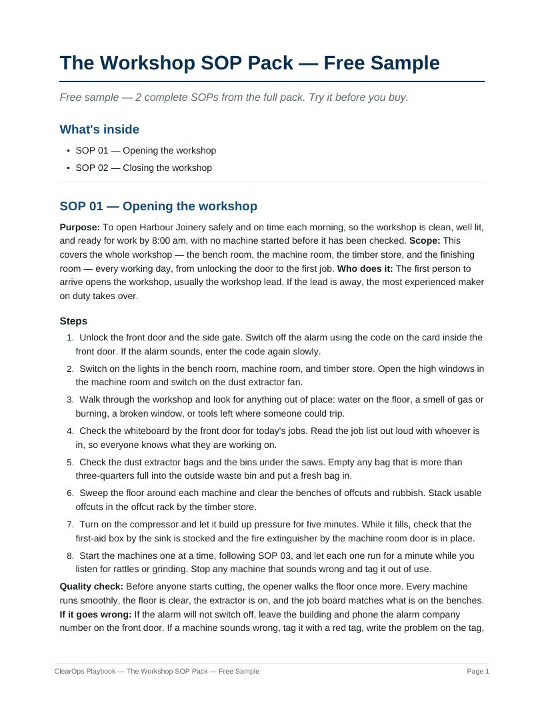

Workshop
Workshop SOP Pack
Ten ready-to-use procedures for a small workshop, written out in full around a four-person joinery business — no blanks to fill in. From opening up in the morning to quoting jobs, checking finished work, and training a new helper, each SOP gives you numbered steps, a quality check, what to do when things go wrong, and what to record. Print it, keep it by the bench, and run the workshop the same good way every day, whoever is in.

Running a small workshop means holding everything in your head: how the day starts, how a machine is set up, how a quote is worked out, and what happens when something goes wrong. That works fine until you are ill, on holiday, or trying to train someone new — and then the whole workshop slows down while people guess. The Workshop SOP Pack fixes that.
It gives you ten clear, written procedures for the jobs that come up every week in a small making business, each one written out in full with real numbers, real times, and real examples, so there is nothing left to guess at. Every procedure follows the same simple shape: what it is for, what it covers, who does it, numbered steps, a quality check, what to do if it goes wrong, and what to record. The pack opens and closes the day properly, with a morning routine that gets the workshop safe and ready by 8:00 am and an evening routine that leaves it clean, locked, and ready for tomorrow.
It covers setting up machines safely, checking deliveries as they arrive, taking orders, and pricing jobs fairly — including how to work out materials, time, and labour, and what payment terms to set. It also covers the parts of the job that usually cause the most stress: checking a finished piece before it leaves, packing and shipping it so it arrives undamaged, and handling a mistake or a damaged piece honestly, without blame. The last procedure trains a new helper over two weeks, one machine at a time, so they learn the safe way first and are only signed off when they can do a task properly on their own.
The procedures are written around Harbour Joinery, a four-person joinery workshop making custom furniture, so the examples feel like a real workshop rather than a blank form. Use them as they are, or change the names, times, and details to match your own business — the structure stays the same. Print the pack, keep it by the bench, and hand a new starter the training procedure on their first morning.
It is the fastest way to make a small workshop run the same good way every day, whoever is in.
Watch the video
A quick look at the workshop this pack was written for.
What's inside
- SOP 01 — Opening the workshop
- SOP 02 — Closing the workshop
- SOP 03 — Setting up a machine safely
- SOP 04 — Receiving and checking materials
- SOP 05 — Taking a customer order
- SOP 06 — Quoting a job
- SOP 07 — Quality check before dispatch
- SOP 08 — Packing and shipping an order
- SOP 09 — Handling a mistake or damaged work
- SOP 10 — Training a new helper
- PDF version (10 pages, print-ready)
- Word version (.docx, editable)
- Markdown version (.md, editable)
Try the free version
The free version has SOP 01 and SOP 02 in full from this exact pack, in PDF, Word and Markdown. No sign-up, no email.
The full pack
The full pack has all 10 procedures in PDF, Word and Markdown. Checkout is being set up — the buy button will work soon. In the meantime, the free version above shows you exactly what the paid pack is like.
All sales of digital downloads are final. Please download the free version first and make sure this pack fits your business before you buy.